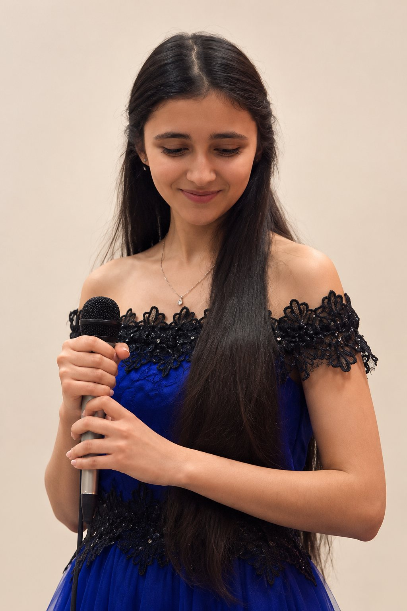
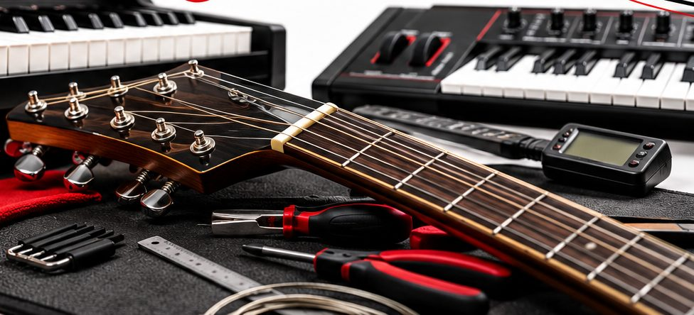
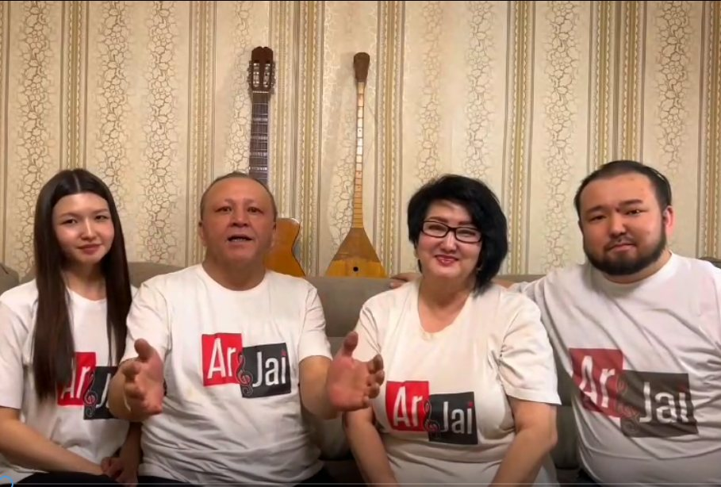
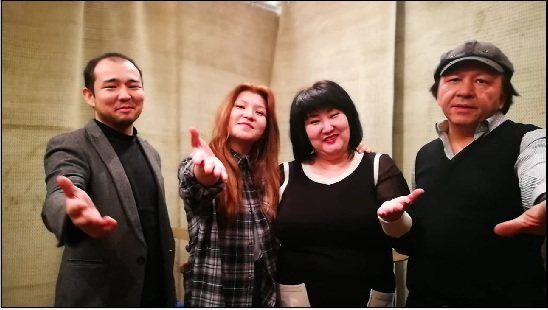
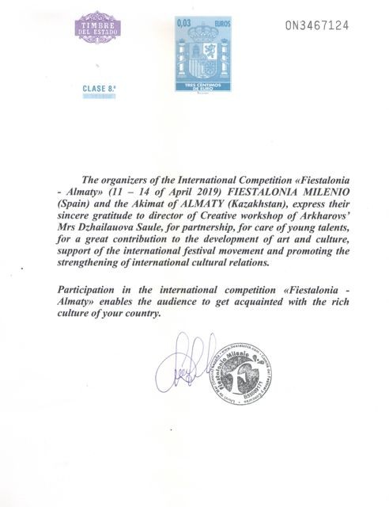
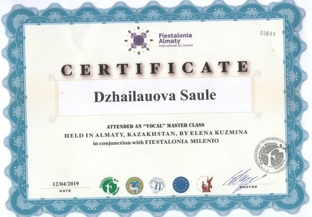

Музыкальная семейная студия ArJai и авторская система обучения ДоСи
Не просто научить музыке. Научить получать результат.
ОпытМастерствоСистема→Результат
Пройдите анкету за минуту — диагностика бесплатно
- 35+ лет опыта
- 5000+ учеников
- реальные выступления и результаты

Преподаём с 90-хстудия ArJai — с 2014 года
История Бахытжанас нуля — до побед в конкурсахЧто мы даём
ArJai — студия, где учатся музыке и выходят на сцену. ДоСи — система, которая помогает получать результат и передавать его другим педагогам.
ArJaiстудия, где учатся
 Обучение музыкеВокал, фортепиано и синтезатор, гитара, теория, дирижирование. Дети и взрослые, очно и онлайн.Занятия
Обучение музыкеВокал, фортепиано и синтезатор, гитара, теория, дирижирование. Дети и взрослые, очно и онлайн.Занятия

МастерскаяРемонт, настройка и обслуживание гитар, фортепиано и синтезаторов.Мастерская ЗвукозаписьЗапись вокала и инструментов — для учеников студии и всех желающих.Звукозапись
ЗвукозаписьЗапись вокала и инструментов — для учеников студии и всех желающих.Звукозапись


Четыре шага к результату
Так строится обучение каждого ученика — от первой встречи до выступления на сцене.
-
Диагностика
выявление данных: ритм · слух · интонация, цели и ожидания
-
Система
выстраивание программы обучения
-
Обучение
тренировка слуха, ритма, интонации
-
Результат
выступление на концерте
Семья музыкантов. Преподаём с 90-х
Сауле Джайлауова преподаёт с 1983 года — её педагогический стаж начался в 16 лет. Вместе с мужем, музыкантом Кайратом Архаровым, они учат с 90-х, а в 2014 году открыли собственную студию ArJai.
- 1983Сауле начинает преподавать
- 90-есемья Архаровых учит музыке
- 2014открыта студия ArJai
- 5000+учеников от 3 до 73 лет
- 60+концертов с учениками


Здесь учатся дети и взрослые, а ученики выступают на настоящих концертах и международных конкурсах.
Возможно, вы узнаёте себя
Отметьте в анкете то, что про вас, — или опишите своими словами.
Если вы родитель
- Ребёнок занимается, а результата не видно
- Интерес к музыке пропадает
- Подготовить к поступлению в музыкальную школу или колледж, к конкурсу
- Ребёнок боится выступать
- Хочется развития и реализации способностей и талантов
- Задержка развития, заикание — исправить речь и дикцию
Если учиться хотите вы
- Давно мечтаю петь или играть
- Самому заниматься не получается
- Боюсь, что «нет слуха»
- Начинал(а), но терял(а) интерес и бросал(а)
- Хочу подготовиться к поступлению, выступлениям и конкурсам
Если вы педагог
- Ученики приходят и уходят
- Сложно объяснять материал разным детям
- Нет единой системы уроков
- Сложно показывать родителям результат
- Хочется больше учеников и дохода
- Хочется стать сильнее как специалист
Если вы владелец школы или студии
- Педагоги работают каждый по-своему — нет единого стандарта качества
- Родители не всегда видят результат
- Высокая текучесть учеников
- Сложно контролировать качество обучения педагогов
Для каждой задачи у нас есть своё решение
Начинаем с диагностики: понимаем уровень и цель, затем строим понятный путь от начала до результата.
Результат слышно со сцены
Больше 60 концертов с учениками, конкурсы и выступления за рубежом. Лучший пример — история Бахытжана.

Бахытжан: с нуля — до побед в конкурсах
Учитель математики и физики. Пришёл в ArJai без музыкального образования — и за два года научился уверенно владеть голосом.
- Было7-е занятиеРазучивает первую песню из репертуара Эдит Пиаф
- СталоЧерез 2 годаУчастие и победы в конкурсах, выступление в Европе, больше 15 песен Эдит Пиаф, Шарля Азнавура и Мирей Матьё


Все видео студии на YouTube истории учеников «было — стало»
Что меняется у педагога
ArJai — практика и реальные результаты. ДоСи — система, которая помогает их создавать и передавать другим педагогам.
Говорят ученики
Ученики от 7 до 52 лет — очно и онлайн, даже из Лос-Анджелеса.


Ваш ребёнок учится в ArJai?
Расскажите, что изменилось — опубликуем отзыв с вашего разрешения.
Учились по системе ДоСи?
Поделитесь, как изменилась ваша работа с учениками.
Сколько стоят занятия
Индивидуальное занятие длится 60 минут. Первый шаг — диагностика, за анкету она бесплатная.
Групповые занятия — по запросу. цены групп и по маршрутам

Сауле Джайлауова
ДоСи создана не из теории. Она выросла из многолетней практики.
- Основатель студии ArJai
- Автор системы ДоСи
- Эксперт по обучению педагогов
- Преподаёт с 1983 года
- Партнёр конкурса Fiestalonia — Almaty
Педагогический стаж Сауле начался в 16 лет. Вместе с мужем, музыкантом Кайратом Архаровым, она учит с 90-х, а в 2014 году они основали ArJai. Через студию прошли более 5000 учеников в возрасте от 3 до 73 лет — на этой практике и выросла система ДоСи.
Признание

Апрель 2019 Благодарность от международного конкурса «Fiestalonia — Almaty» Организаторы конкурса — Fiestalonia Milenio (Испания) и акимат Алматы — благодарят Сауле Джайлауову, руководителя Творческой мастерской Архаровых, за партнёрство, заботу о юных талантах и вклад в развитие искусства и культуры.
12 апреля 2019 Сертификат вокального мастер-класса Мастер-класс по вокалу Елены Кузьминой в Алматы, проведённый совместно с Fiestalonia Milenio в рамках международного конкурса.Частые вопросы
Как получить бесплатную диагностику?
Пройдите анкету на сайте — ответы придут нам в WhatsApp, и мы пригласим вас на бесплатную диагностику.
Как проходит диагностика?
Это вводная встреча: проверяем ритм, слух и интонацию, узнаём цели и ожидания, затем предлагаем программу обучения.
Сколько стоят уроки вокала и фортепиано?
Индивидуальное занятие 60 минут: очно в Алматы — от 8 000 ₸, онлайн — от 6 000 ₸. Абонемент при занятиях 2 и более раз в неделю: 64 000 ₸ в месяц очно и 48 000 ₸ онлайн.
Можно ли начать с нуля?
Да. Даже если вы никогда не занимались музыкой — определим отправную точку и подберём программу под вашу цель.
Есть ли занятия для взрослых?
Да. Учим от 3 до 73 лет — в видеоотзывах на сайте рассказывают ученики 40, 45 и 52 лет.
Готовите ли к конкурсам и поступлению?
Да: к конкурсам, экзаменам и поступлению в музыкальную школу или колледж, к кастингам и концертам.
Можно ли заниматься онлайн?
Да, занятия проходят онлайн и очно в Алматы. У нас занимаются ученики даже из США.
Подойдёт ли ДоСи начинающему преподавателю?
Да. Система даёт понятную логику урока и инструменты с первых занятий.
А опытному педагогу?
Да. Она помогает систематизировать опыт и вырасти в доходе.
Входят ли материалы в обучение ДоСи?
Да. Сауле передаёт педагогам все свои пособия: наглядные и репертуарные материалы, алгоритмы и инструменты.
Выдаётся ли сертификат?
По курсу «Успешный репетитор ДоСи» — да. условия выдачи сертификата
Можно ли внедрить ДоСи в музыкальную школу?
Да, для владельцев школ и студий есть отдельное направление. Подробнее для владельцев
Сыграйте гамму ДоСи
Каждая нота — шаг системы ДоСи. Шаги идут по порядку, и каждый опирается на предыдущий. Нажмите на клавиши — прозвучит настоящий рояль.
Нажмите на клавишу — прозвучит нота.
Оставить заявку
Пройдите анкету — ответы сразу придут нам в WhatsApp, и мы пригласим вас на бесплатную диагностику.
Алматы — очно, весь мир — онлайн. адрес студии, 2ГИС и e-mail